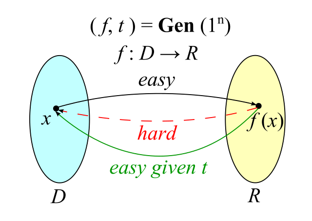

短Hash算法方案
最近在需求中遇到一个问题：在对hash值长度敏感的场景下如何选择合适的hash算法，生成的hash值要尽量短的同时要保证安全hash算法的安全侧基本要求。
如生成短链接目前常用的转换算法进制算法、随机数算法、hash算法三个方案中其中包含7/11位短Hash值的诉求，而目前常见的安全哈希算法的hash值基本为128/256bit。
hash算法概念
hash算法的解释用wikipedia上对TDF使用的一张图片可以做更好的解释  hash算法就是一个建立在压缩函数上的单向函数（One-way function），即根据输入x可以快速计算输出\(f(x)\)，但是根据输出\(f(x)\)很难根据该值推算出对应的输入\(x\)。
从hash算法的特性中可以提炼两个特征
- 可以抵抗原像攻击：根据hash值\(f(x)\)很难获取输入\(x\)
- 可以抵抗第二原像攻击（hash碰撞）：给定\(x\)，对于\(x\) != \(x\)'，对于输出应遵循\(f(x)\) != \(f(x')\)
常见Hash算法
目前常用的hash算法主要包括MD5、SHA家族，简单的对比：
| 算法名称 | 输出散列值长度-bits | 是否存在碰撞 |
|---|---|---|
| CRC-32 | 32 | 是 |
| MD5 | 128 | 是 |
| SHA-1 | 160 | 是 |
| SHA-256 | 256 | 否 |
| SHA-512 | 512 | 否 |
hash算法抗碰撞性
抗碰撞性或在n长度下两个\(x\),\(x'\)经过hash算法获取输出\(f(x)\)=\(f(x')\)的概率是多少？这个问题其实也是生日问题（在>=23个人中至少有两个人生日相同的概率大于50%）的一种具体体现，即如果随机给定N个均小于K的非负整数，其中至少两个相等的概率为\(p(N|K)\)，根据生日问题的数学论证方式分配0.5的碰撞概率，可以得到预期论证公示为 \(\approx\) \(1-e^{{-k^{{2}}/(2N)}}\) - hash长度为16bit做hash碰撞计算 1
2
3
4
5
6
7
8
9
10
11
12
13
14
15
16
17In [14]: import math
In [15]: N = math.pow(2, 16)
In [16]: for i in range(1, 11):
...: K = 50 * i
...: p = 1 - math.exp(-0.5 * K * (K -1) / N)
...: print("N:{}, K:{}, p:{}".format(N, K, p))
...:
N:65536.0, K:50, p:0.01851840426367346
N:65536.0, K:100, p:0.07274902012520568
N:65536.0, K:150, p:0.1567712182076978
N:65536.0, K:200, p:0.26188076496494694
N:65536.0, K:250, p:0.3780712916236951
N:65536.0, K:300, p:0.4955853795330586
N:65536.0, K:350, p:0.6062072573580228
N:65536.0, K:400, p:0.7040756309248388
N:65536.0, K:450, p:0.7859443315915255
N:65536.0, K:500, p:0.850959013777904
hash长度32bit做hash碰撞计算
\(p(77000|2^{{32}})\) \(\approx\) 50%1
2
3
4
5
6
7
8
9
10
11
12
13
14
15
16
17In [1]: import math
In [2]: N = math.pow(2, 32)
In [7]: for i in range(1, 11):
...: K = 20000 * i
...: p = 1 - math.exp(-0.5 * K * (K -1) / N)
...: print("N:{}, K:{}, p:{}".format(N, K, p))
...:
N:4294967296.0, K:20000, p:0.04549633911131801
N:4294967296.0, K:40000, p:0.16994213048124063
N:4294967296.0, K:60000, p:0.3423537943601189
N:4294967296.0, K:80000, p:0.5252888411157739
N:4294967296.0, K:100000, p:0.687809461338744
N:4294967296.0, K:120000, p:0.8129476331069347
N:4294967296.0, K:140000, p:0.8978919803274777
N:4294967296.0, K:160000, p:0.9492180149513215
N:4294967296.0, K:180000, p:0.9769902093325205
N:4294967296.0, K:200000, p:0.990501197966016hash长度为64bit做hash碰撞计算
\(p(5.1*10^{{9}}|2^{{32}})\) \(\approx\) 50%1
2
3
4
5
6
7
8
9
10
11
12
13
14
15In [23]: for i in range(1, 11):
...: K = math.pow(10, i)
...: p = 1 - math.exp(-0.5 * K * (K -1) / N)
...: print("N:{}, K:{}, p:{}".format(N, K, p))
...:
N:1.8446744073709552e+19, K:10.0, p:0.0
N:1.8446744073709552e+19, K:100.0, p:2.220446049250313e-16
N:1.8446744073709552e+19, K:1000.0, p:2.708944180085382e-14
N:1.8446744073709552e+19, K:10000.0, p:2.710276447714932e-12
N:1.8446744073709552e+19, K:100000.0, p:2.710478508305414e-10
N:1.8446744073709552e+19, K:1000000.0, p:2.7105026889628903e-08
N:1.8446744073709552e+19, K:10000000.0, p:2.710501486702377e-06
N:1.8446744073709552e+19, K:100000000.0, p:0.0002710138095318726
N:1.8446744073709552e+19, K:1000000000.0, p:0.026741008873954697
N:1.8446744073709552e+19, K:10000000000.0, p:0.9334968145485968
短hash值方案
由上面可知输出\(x\)经过hash算法输出的\(f(x)\)长度越长做相同\(x\)组合下产生hash碰撞的几率越低，但如文章一开始所说实际业务场景对\(f(x)\)hash长度敏感且要尽量减少\(f(x)\) = \(f(x')\)碰撞概率应该怎么选择合适且安全的Hash算法？以生成\(f(x)\)长度为32bit为目的反推合适的hash算法，自己认为可行的方案有三种： - 选择CRC-32短hash算法。 - 选择目前相对安全的，且hash算法\(f(x)\) 长度为32*2n，n的长度不等于1且越小越好，如MD5 \(f(x)\)=128bit，(1)然后以64bit做分割 \(f(x)\) = <\(L_{{64}}\), \(R_{{64}}\)>, \(L_{{64}}\)和\(R_{{64}}\)做异或运算后再做32bit截取后做异或运算生成目标32bit。 - 选择目前没有安全缺陷、hash碰撞低的安全Hash算法如sha-256生成256bit后截取前32bit分割\(f(x) = <L_{{32}}, R_{{224}}>\)，直接获取\(L_{{32}}\)作为结果，\(R_{{224}}\)直接丢弃。
方案对比 - CRC-32在一定输入\(x\)组合下产生hash碰撞的几率非常高。 - 使用XOR可以对输入的bit做相对均匀的0、1分布，但是MD5算法目前为非安全Hash安全，且两次的异或运算是否会增加Hash碰撞几率。 - sha-256目前为安全的hash算法，其具有均匀分布性，截取前32bit做短hash值应该是相对可行的方案，但是如何证明可行性？
从NIST中找到一篇和hash值截取的文章1，其中提到 1
2
3
4
5
6
7
8
9
10
11
12
13
14
15
16
17
18Some applications may require a value that is shorter than the (full-length) message
digest provided by an approved hash function as specified in FIPS 180-4. In such cases, it
may be appropriate to use a subset of the bits produced by the hash function as the
(shortened) message digest.
Let the (shortened) message digest be called a truncated message digest, and let λ be its
desired length in bits. A truncated message digest may be used if the following
requirements are met:
1. The length of the output block of the approved hash function to be used shall be
greater than λ (i.e., L > λ).
2. The λ left-most bits of the full-length message digest shall be selected as the
truncated message digest.
For example, if a truncated message digest of 96 bits is desired, the SHA-256
hash function could be used (e.g., because it is available to the application, and
provides an output larger than 96 bits). The leftmost 96 bits of the 256-bit
message digest generated by SHA-256 are selected as the truncated message
digest, and the rightmost 160 bits of the message digest are discarded.
3. If collision resistance is required, λ shall be at least twice the required collision
resistance strength s (in bits) for the truncated message digest (i.e., λ ≥ 2s).